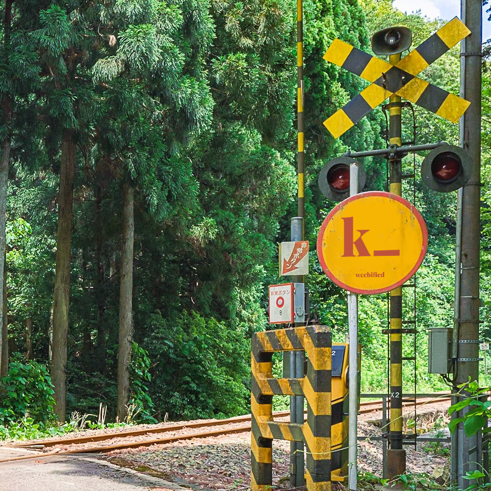

The Kana enigma.
About k_

Just as I'm asking myself when developing this, you're probably thinking "What on god's earth led
you to make such an abomination?". I'll spare you the details but basically
my friend kana produced a bunch of pictures of him wearing thigh highs and sent those to us, his friend
group, now this is where you come in, behind this puzzle those
pictures reside, untouched (yet). Everything in this puzzle is very much so inspired by the real
life person who this was made for, the color scheme matches the colors he likes (kinda), the
solutions to the different parts of the puzzle, etc. I should also metion he has agreed to me making this,
he even suggested a few things.
Let's get started
Alright so you've listenened to me rambling for long enough, let's get you started with this. Somewhere on
the internet, on something that has a connection to me there is the first part of the puzzle, there are no rules, so do whatever you need to do to obtain those pictures. Figure it out and
you'll be lead to the rest of the puzzle.
weebified © All rights reserved.